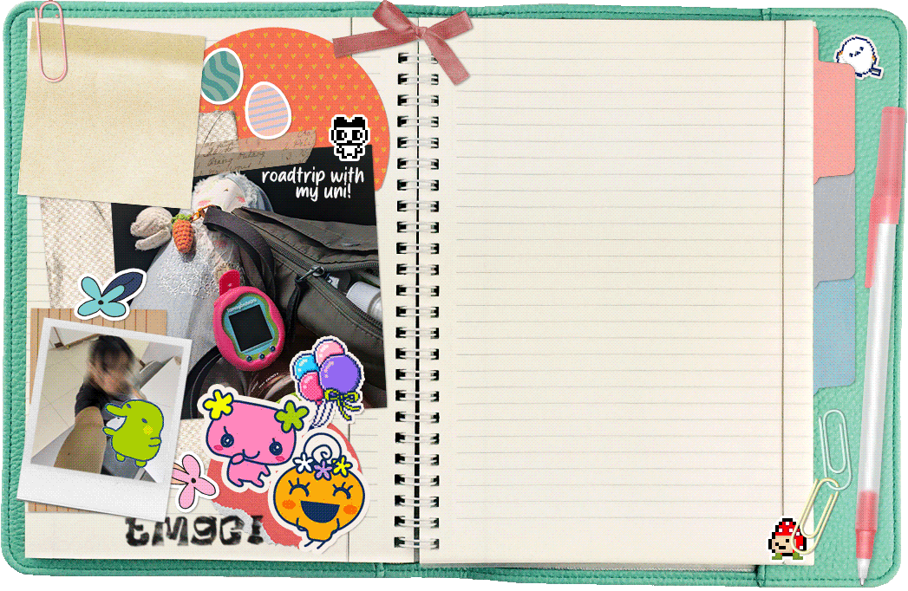

updates!
24/09/03:
Added my tama info and published page :)
24/09/03:
Created this new tamagotchi shrine!
owned >
raised!
wishlist
currently playing:
tamagotchi uni
if you're currently using a tablet in portrait mode, I recommend turning it landscape wise to view this site!